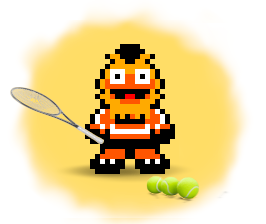
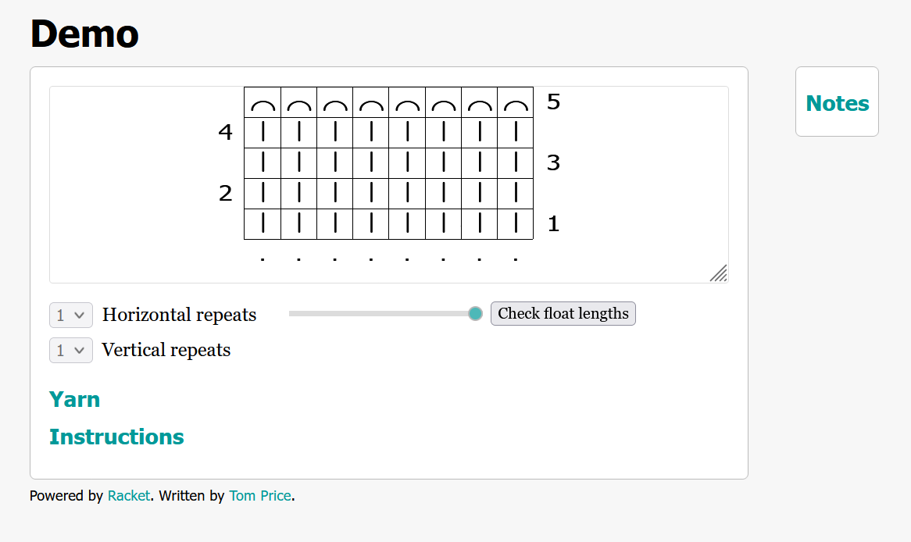

2 How to Make a New Pattern

2.1 Create a New File
From the menu bar in DrRacket, select File > New Tab. Edit the resulting file so that the first three lines read as follows:
#lang sweet-exp typed/racket require knotty
The first line means that the program will be written in a language variant called typed Racket. You can read all about it in the Racket documentation. More specifically, it uses a flavor of typed Racket specified by the package sweet-exp that you should also have installed.
The second line loads the Knotty module, assuming that it has been installed.
The third line is blank. The last line of code should usually be empty when using sweet-exp, as explained in the following section.
2.2 Define a Pattern
The following snippet of code defines a pattern called demo. The complete program can be found in the Knotty repository as demo.rkt.
define demo pattern [name "Demo"] rows(1 3) k8 rows(2 4) p row(5) bo
Let’s go through the script line by line.
define demo ...
When Knotty sees the word define, it knows that it is going to need two more pieces of information, called arguments. First it needs the name of the container that is going to be defined, in this case demo. The second argument determines its contents. You can think of it as a box which with a nameplate on the front and room inside for one thing, so that in future when Knotty sees the word demo it knows to look in that particular box and use whatever is inside.
Instructions in Knotty can be written in different styles. The current script uses indentation to make it clear to which instructions should be grouped together. (The final, blank line is needed to indicate the end of the instruction.) But it is also possible to use parentheses. The following all mean "define a box, call it x, and put y in it":
define x y
define(x y)
(define x y)
The last of these is the canonical Racket style, and is used for the reference section that follows. But we will continue using the indented style for now, because it is probably a little bit easier for humans to read. Moving on to the thing that is being defined as demo:
pattern [name "Demo"] ...
pattern creates a pattern object, and takes a variable number of arguments.
Some of these may be keyword arguments, which are optional and specified using a square bracket notation. Here, the keyword name is given the value "Demo". (This is a label for the pattern that is part of its internal data structure, and nothing to to with the fact that we are defining a box called demo to put the pattern in.) The remaining arguments to pattern describe all the yarns used, main color first, and the rows of stitches. In this pattern no yarns are specified and the default white yarn is used.
More information on pattern and other aspects of the language can be found in the Reference section.
2.3 Pattern Rows
... rows(1 3) k8 rows(2 4) p row(5) bo
row (or, equivalently, rows) defines the stitches in one or more rows of the pattern. The function takes two sets of arguments.
The first set of arguments must include at least one row number, or an expression that evaluates to a list of row numbers. It can include some optional keywords, that are specified in the usual way using square brackets.
There are some common sense restrictions on the information that is acceptable. For example, there must be at least one row. Row numbers must form a consecutive sequence starting at 1. The number of stitches consumed by a row must equal the number of stitches produced by the previous row (except for short rows). And so on.
The second set of arguments describes the stitches in the row. Various different kinds of stitches can be specified, as well as how many of each stitch, and the color of yarn used to knit them. The total number of stitches need not be made explicit if this can be inferred from other information in the pattern. A complete list of all the Stitches that can be used is provided in the reference section.
The definitions for demo have the following meaning. Rows 1 and 3 are knit, and contain 8 stitches. Rows 2 and 4 are purled. Bind off in row 5.
2.4 Run the Program
Having typed in your script, save it by using the menu options File > Save Definition As.... Be sure to save your script frequently while you are editing it so that your changes are recorded. It’s a good idea to use version control software like git.
You can run the code by selecting Racket > Run from the menu bar, by using the keyboard shortcut Ctrl-R, or by pressing the green triangle in the top left of the window.
Run the script now. If you are successful, a green prompt will appear in the area at the bottom of the screen. This is the "REPL" or interaction environment, where you can type commands and have the results appear as soon as you hit Enter. This saves time when you are testing out your script because you don’t have to press Run and wait for your script to compile all over again.
Just be aware that in the interaction environment, multiline commands that use the indented style of syntax must be entered by copy-pasting the entire command and only then pressing Enter, rather than pressing Enter after each line of input.
2.5 View the Knitting Chart
Enter the following line in the REPL and press Enter. If the pattern Demo is defined correctly, a browser should open a webpage showing a knitting chart.
show demo

Stitches are printed on a grid, with each horizontal line corresponding to a row in the pattern. Row numbers are shown on either side of the grid. Row numbers on the left are for rows knit from left to right. Row numbers on the right are for rows knit from right to left.
A stitch may occupy one or more columns in the grid, depending on how many stitches it consumes and/or produces. Different symbols are used to represent the various types of stitch. The background color is determined by the color of the yarn used to knit each stitch: in this case, white. Empty spaces in the grid are shown using a "no stitch" symbol ╳ on a grey background.
Note that the same symbol is used for knit stitches on odd-numbered rows and purl stitches on even-numbered rows. This is because the default pattern is set up for hand knitting a flat workpiece, so that the direction of knitting switches at the end of each row.
Return to DrRacket, and press the red square labeled "Stop" in the top right corner to halt the webserver and return to the console.
2.6 Display Knitting Instructions
text demo
|
text displays written instructions for knitting the pattern.
The introductory paragraph provides details on some of the main options that are specified using the pattern function keyword arguments. We can see that for our demonstration pattern, using the default arguments results in a hand knitting pattern instead of a machine knitting pattern. Other defaults include knitting flat rather than in the round, and knitting the first row on the RS (right side) of the workpiece from right to left.
The second paragraph shows which yarns are used in the pattern. The default is to use a single yarn, called MC (main color), for everything. The default yarn color is white (#FFFFFF in RGB hex code).
The rest of the pattern describes each row in turn in the order that the stitches are knitted. Stitches are shown using standard abbreviations, so that k8 means knit 8 stitches, p8 means purl 8 stitches, and bo8 means bind off 8 stitches. In each case, the yarn used for the stitches is also specified. The description also specifies the number of stitches consumed by the first row, and the number of stitches produced by the final row.